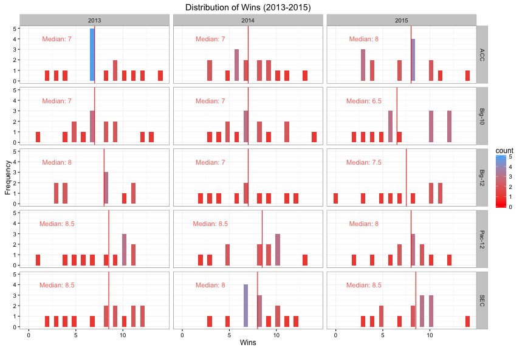

I scraped this data during the second week of CFB and the first week of the NFL. Excuse my delay on getting around to the analysis.
Naturally, with every new season comes new AP rankings, new potential all-Americans, etc. That is when I decided to start thinking about some trends to look for in College Football. Since style of play (offensively) is one of the hottest topics in the game, why not find a way to look at that.
Win Distribution by Conference

The plot above shows the win distribution per conference over the last 3 years.
Style of Play (Clustering Analysis)
Below we can see the overview of the offensive data for all NCAA teams from 2013 to 2015. This table will be super useful later on.
| Value | Minimum | Maximum | Mean | Median | Stdev |
|---|---|---|---|---|---|
| Wins | 0.000 | 14.00 | 6.72 | 7.00 | 3.188 |
| Plays Per Game | 59.667 | 87.54 | 71.71 | 71.42 | 5.424 |
| Yards per Play | 1.919 | 7.67 | 5.63 | 5.56 | 0.800 |
| Yards per Score | 6.981 | 24.23 | 14.36 | 13.78 | 2.451 |
| Time per Play (Seconds) | 19.506 | 32.07 | 25.22 | 25.10 | 2.639 |
| Total Offense Yards (per Game) | 120.080 | 618.77 | 404.87 | 400.08 | 70.717 |
| Offensive Ratio per Game (Passing Yards/Rushing Yards) | 0.175 | 12.00 | 1.52 | 1.40 | 0.891 |
As we all know, College Football is being taken over by the Spread Offense. There are other styles, such as the option and pro style. Let’s see if we can use stats to identify various styles of play. Additionally, I am hoping to see whether style of play corresponds to a higher win percentage. There are various styles of play, option, spread, and pro style offenses. The four main schools of spread offense are: (1) Air Raid, (2) Spread Option, (3) Smashmouth Spread and (4) Pro-style Spread.
Traditionally speaking different styles are defined by the types of sets they come out of. A pro style offense will traditionally come out in the I-formation or the pistol formation and very rarely line up in shotgun. Whereas a traditional spread team will line up in the shotgun and very rarely anything else. Of course each coach has their own wrinkles.
The question was how to mathematically quantify styles of play. Luckily enough, each style of play has distinct characteristics and these can be seen in the stats. For instance, a successful spread team usually runs a high number of plays per game. Spread offenses are also extremely quick and incorporate no-huddles when they catch defenses in the wrong set, this correlates to lower Time of Possession (than Pro-Style offenses) and very short time per play. It is important to note, that traditionally when talking about time and spread offenses, ESPN and other TV broadcasts highlight the time from the end of the previous play to the snap of the next play. Sadly, we don’t have access to such data.
I chose the following statistics to identify team styles via a clustering analysis. These statistics were deemed to be the best indicators of style. They are as follows:
* Number of Plays Per Game
* Yards Per Play
* Time Per Play
* Total Offensive Yards Per Game
* Ratio: (Passing Yards Per Game/Rushing Yards Per Game)
The next question is how to use stats that have different units. The stats are scaled using the scale function in R. The scale function centers a set of values by subtracting each value by the mean and dividing by the standard deviation. At this point, we should be able to start running our analysis.
One of the most popular clustering methods in data science is K-means clustering. The clustering method partitions the observations into k clusters. Clustering analysis requires that you indicate the number of clusters expected from the data. They have different methods to identify the number of potential clusters. Both the elbow method and gap statistic show that there should be 3 clusters in the data.
| Cluster_1 | Cluster_2 | Cluster_3 | |
|---|---|---|---|
| Plays_Per_Game | -0.3968 | -0.5097 | 0.974 |
| Yds_Per_Play | -1.1168 | 0.0787 | 0.677 |
| Yds_Per_Score | 1.2454 | -0.3782 | -0.359 |
| Time_Per_Play | 0.0556 | 0.6623 | -0.942 |
| Tot_Off_Yards_Per_Game | -1.0539 | -0.1804 | 0.986 |
| ratio | 0.1809 | -0.3382 | 0.334 |
The results from the cluster can be seen above. Mind you the numbers above are scaled. Let’s take a look at each individual cluster and see if we can identify a style of play. In each of these descriptions, I will interpret the results above.
Cluster 1
Alright, let’s make sense of the numbers above. But before we start, lets note that the data-set has a total of 371 observations. This first cluster has 85 observations, that is 23% of the data-set.
Since the data was scaled before running the cluster analysis, the way these results should be read are that it is (insert number) standard deviations above/below the mean. Example: In Cluster 1, the number of plays per game are -0.39 standard deviations below the mean. What does this mean? The average plays per game for this data-set is 71 plays, so generally teams in this cluster run less plays per game.
Looking at the remainder of the results, teams don’t gain a lot of yards per play (-1.11 sd below the mean) naturally corresponds to teams needing to gain more yards per score (1.245 sd above the mean). This seems like the most likely cause for having such drastically different numbers.
Teams lean slightly towards passing the ball more often than rushing, the ratio in this cluster is 0.18 standard deviations above the mean. Lastly teams are a whole standard deviation below the mean for total offensive yards per game.
So what does all of this tell us? That teams in this cluster are highly unsuccessful. Another thought could be that they have porous defense, and that is something that will be verified later. I am really not sure what style of play to characterize this cluster as. Based on the table below, we can clearly tell that teams here don’t win much. Ineffective Offense that’s about the best I can do for now. There is some future work to do here. But let’s look at the other clusters first, hopefully the results are better.
| Team | Wins | Year | Plays_Per_G | Offensive_Ratio | Yards_Per_Score | Time_Per_Play |
|---|---|---|---|---|---|---|
| Boston College | 3 | 2015 | 62.6 | 0.676 | 6.98 | 28.7 |
| Iowa St. | 2 | 2014 | 76.0 | 2.002 | 16.06 | 22.5 |
| Iowa St. | 3 | 2013 | 75.2 | 1.524 | 14.64 | 24.8 |
| Iowa St. | 3 | 2015 | 75.8 | 1.243 | 16.33 | 25.0 |
| Kansas | 0 | 2015 | 74.8 | 1.936 | 21.67 | 22.7 |
| Kansas | 3 | 2013 | 68.8 | 0.911 | 19.25 | 25.9 |
| Kansas | 3 | 2014 | 70.2 | 1.674 | 18.21 | 25.9 |
| Kentucky | 2 | 2013 | 64.5 | 1.307 | 16.64 | 26.0 |
| North Carolina St. | 3 | 2013 | 78.8 | 1.480 | 17.70 | 24.3 |
| Northwestern | 10 | 2015 | 73.2 | 0.735 | 16.77 | 24.4 |
| Oregon St. | 2 | 2015 | 65.8 | 0.897 | 17.71 | 23.9 |
| Purdue | 1 | 2013 | 62.1 | 3.216 | 17.51 | 26.6 |
| Purdue | 2 | 2015 | 76.8 | 1.807 | 14.68 | 21.8 |
| Purdue | 3 | 2014 | 69.7 | 1.192 | 14.48 | 24.9 |
| Syracuse | 3 | 2014 | 67.2 | 1.263 | 18.63 | 23.8 |
| Vanderbilt | 3 | 2014 | 61.7 | 1.639 | 16.76 | 28.7 |
| Virginia | 2 | 2013 | 82.9 | 1.352 | 18.61 | 24.1 |
| Virginia Tech | 8 | 2013 | 71.2 | 1.972 | 15.82 | 28.1 |
| Wake Forest | 3 | 2014 | 64.0 | 4.419 | 14.61 | 26.9 |
| Wake Forest | 3 | 2015 | 69.5 | 2.170 | 19.16 | 26.9 |
Cluster 2
The Time Per Play in Cluster 2 is 0.66 standard deviations above the mean for all teams in CFB (13-16). Teams take their time on offense and let the play develop.The offensive ratio is -0.34 standard deviations below the mean, thus showing a bias towards running the ball more often than passing. Keep in mind that the average offensive ratio is 1.5, this leans towards the pass. Yards per score is indicative of the number of big plays a team has. In this case, the yards per score is -0.37 standard deviations below the mean.
Overall for Cluster 2 (Teams): don’t run a lot of plays, are not big play teams, milk the clock every play, and run the ball more. What style does that sound like to most of you? I would say a pro-style offense. It is worth noting that more teams in this cluster seem to have a slight lean towards running the ball. But based on the total offensive yards, it seems like a very balanced approach.
Alright well let’s take a look at some of the teams in this cluster. This cluster has about 165 observations out of the total 371. That is about 45% of the data-set.
| Team | Wins | Year | Plays_Per_G | Offensive_Ratio | Yards_Per_Score | Time_Per_Play |
|---|---|---|---|---|---|---|
| Alabama | 14 | 2015 | 72.5 | 1.136 | 12.2 | 27.8 |
| Arkansas | 3 | 2013 | 64.6 | 0.712 | 17.3 | 28.3 |
| Colorado | 4 | 2013 | 69.3 | 2.062 | 14.6 | 24.9 |
| Florida St. | 13 | 2014 | 69.1 | 2.196 | 13.1 | 25.1 |
| Georgia Tech | 3 | 2015 | 64.6 | 0.475 | 12.9 | 28.9 |
| Indiana | 4 | 2014 | 71.0 | 0.536 | 16.1 | 23.9 |
| Iowa | 12 | 2015 | 66.9 | 1.125 | 12.5 | 28.3 |
| Louisville | 12 | 2013 | 68.8 | 2.139 | 13.1 | 29.5 |
| Maryland | 3 | 2015 | 69.1 | 0.868 | 15.2 | 24.0 |
| Michigan St. | 12 | 2015 | 70.9 | 1.548 | 12.9 | 27.8 |
| Michigan St. | 13 | 2013 | 71.4 | 1.218 | 13.1 | 28.0 |
| Ohio St. | 12 | 2015 | 68.6 | 0.770 | 12.2 | 25.6 |
| Rutgers | 4 | 2015 | 67.2 | 1.219 | 13.9 | 27.9 |
| South Carolina | 3 | 2015 | 64.5 | 1.341 | 16.5 | 26.5 |
| Stanford | 12 | 2015 | 66.3 | 0.947 | 11.5 | 31.5 |
| Syracuse | 4 | 2015 | 62.6 | 0.961 | 11.7 | 28.1 |
| TCU | 4 | 2013 | 68.5 | 1.908 | 13.7 | 26.6 |
| Virginia | 4 | 2015 | 69.8 | 1.646 | 14.8 | 28.1 |
Cluster 3
The third cluster has a 121 observations out of the total 371, that is 32.6% of the data-set.
Time per play is about a whole standard deviation below the mean. On average, teams in this cluster spend less time per play than others. Yards Per Play is 0.68 standard deviations above the mean, indicating that teams have success with the big play. The Offensive ratio is a third of a standard deviation above the mean. Since the mean for this stat leans towards the pass (1.5), being partially above the mean indicates a strong passing offense.
Overall for Cluster 3 (Teams): run a lot of plays, gain a lot of yards per play, run quick plays, and pass the ball more. Notice that I didn’t mention anything about how they score the ball (yards gained). The majority of these descriptors suggest these teams to be classified as an up-tempo offense (i.e Spread). Well we know that spread offenses utilize wide screen passes and RPO (Run, Pass options). The quantity of these plays and success of these plays affect the number of yards per score. Or you could have a play-caller like Jake Spavital (ex-TAMU OC, current Cal OC) who calls so many of them that it is always unsuccessful. Essentially, what I am trying to conclude is that depending on the type of spread a team runs, the average yards per score can change drastically.
| Team | Wins | Year | Plays_Per_G | Offensive_Ratio | Yards_Per_Score | Time_Per_Play |
|---|---|---|---|---|---|---|
| Alabama | 12 | 2014 | 72.7 | 1.345 | 13.1 | 26.2 |
| Auburn | 12 | 2013 | 72.4 | 0.527 | 12.7 | 25.2 |
| Baylor | 11 | 2013 | 82.6 | 1.383 | 11.8 | 19.8 |
| Baylor | 11 | 2014 | 87.5 | 1.698 | 12.1 | 19.9 |
| California | 1 | 2013 | 87.1 | 2.712 | 19.7 | 20.2 |
| Clemson | 11 | 2013 | 79.8 | 1.908 | 12.6 | 20.5 |
| Clemson | 14 | 2015 | 80.5 | 1.307 | 13.4 | 23.8 |
| Colorado | 2 | 2014 | 83.0 | 1.841 | 15.4 | 23.5 |
| Florida St. | 14 | 2013 | 67.6 | 1.555 | 10.1 | 26.1 |
| Illinois | 4 | 2013 | 72.2 | 2.070 | 14.4 | 24.3 |
| Michigan St. | 11 | 2014 | 76.5 | 1.129 | 11.6 | 27.7 |
| Missouri | 12 | 2013 | 74.4 | 1.063 | 12.6 | 24.2 |
| North Carolina | 11 | 2015 | 66.9 | 1.170 | 12.0 | 22.7 |
| Ohio St. | 12 | 2013 | 71.6 | 0.659 | 11.3 | 26.3 |
| Ohio St. | 14 | 2014 | 73.3 | 0.934 | 11.4 | 25.8 |
| Oklahoma | 11 | 2015 | 77.9 | 1.388 | 12.2 | 23.6 |
| Oregon | 11 | 2013 | 74.8 | 1.066 | 12.4 | 20.4 |
| Oregon | 13 | 2014 | 74.5 | 1.333 | 12.0 | 21.6 |
| TCU | 11 | 2015 | 82.9 | 1.613 | 13.4 | 22.7 |
| TCU | 12 | 2014 | 79.8 | 1.577 | 11.5 | 23.0 |
| Texas Tech | 4 | 2014 | 76.2 | 2.295 | 16.5 | 20.5 |
| Washington St. | 3 | 2014 | 84.5 | 12.003 | 16.3 | 22.4 |
| West Virginia | 4 | 2013 | 74.3 | 1.764 | 15.6 | 22.9 |
Plots
I’m hoping this section helps visualize the styles of play and how they correlate to some of these statistics.
The further along we move up the x-axis (Passing Offense) teams are classified as Spread teams. Of course it is interesting to see that teams that belong to the Pro-Style can have a tendency to be quite balanced or lean towards the run slightly. All of the other teams seem to fare poorly with running and passing the ball. Fittingly, I have deemed them in the “Ineffective Offense” category.
In the above plot, the horizontal and vertical lines to highlight the mean values for their respective axes. The left corner is the epitome of a fast pace offense, quick hitting plays and tons of offensive yards per game. Interestingly enough, the pro-style offenses fall in multiple quadrants. In general, it seems the pro-style offenses take quite a bit of time per play, regardless of the number of yards gained per game.
I had to cut off two data points, both belonged to Washington State. The ratio was 8 or higher. Leave it to Mike Leech to run a high-paced passing offense. Where was the running those two years? Who even knows.
Looking at the rest of this, again the spread offenses tend to lie above the mean for the offensive ratio while the pro-style offenses mostly lie below the mean. It is interesting to note though that there are not a lot of teams below 1. Essentially, passing is required to succeed in CFB even if your focus is the running game.
Style of Play in Conferences
The table below shows the distribution of clusters throughout the different conferences. Note I didn’t show Non-Power 5 conferences as it skews the table.
| Conference | Cluster 1 | Cluster 2 | Cluster 3 |
|---|---|---|---|
| ACC | 10 | 26 | 9 |
| Big-10 | 8 | 27 | 7 |
| Big-12 | 7 | 7 | 16 |
| Pac-12 | 2 | 12 | 22 |
| SEC | 5 | 23 | 14 |
The plot below shows offensive styles in each conference. For instance, the Big-10 has historically always been a pre-dominantly run first conference. One of the main reasons for this is the weather and the difficulty it poses on extensive passing playbooks.
Another important topic to study would be looking if conferences had a shift in the style of play. With the inclusion of Texas A&M and Missouri, the SEC changed its landscape a bit. With a few key hires, all of a sudden the hurry-up offense and spread were now present in the SEC. Something the league had not seen in the past. We all know how adamant Nick Saban and Brett Bielma have been about condemning aspects of the hurry-up offense at SEC media days. Note: Nick Saban and Alabama were marked as pro-style offense for two years and the year they hired Lane Kiffin our analysis indicated that they were a spread offense now.
Conclusions
TLDR: I used a set of statistics to identify various styles of play in college football. I wanted to look at a couple of things, whether a specific style had a bias to winning, the change in styles in the Power-5 conferences.
Over the last couple of years, it seems that the SEC and Pac-12 have quite a bit of parity in offensive styles. As expected the Big 10 and Big 12, identify as Pro-Style and Spread offenses respectively. I would have pinned the ACC to have some parity in the offensive styles seen, but to the contrary the majority are pro-style. Also this study once again establishes the dominance of offenses in the Pac-12. Only two teams in the last 3 years fall under the Bad Offenses category. Another shocker is the placement of 5 teams in the SEC under the Bad Offense category.
A couple of areas of future work is to be able to distinguish between pro-style and option offenses. The KMeans method doesn’t seem to be able to capture that. It could very well be the data I have or the algorithm I am using. There is some additional work to be done on this front, I was thinking of using other techniques. Maybe Gaussian Mixture Models and/or PCA? If any of you have thoughts, shoot me a tweet
Source Code
Code on github.
Data Scraping here.